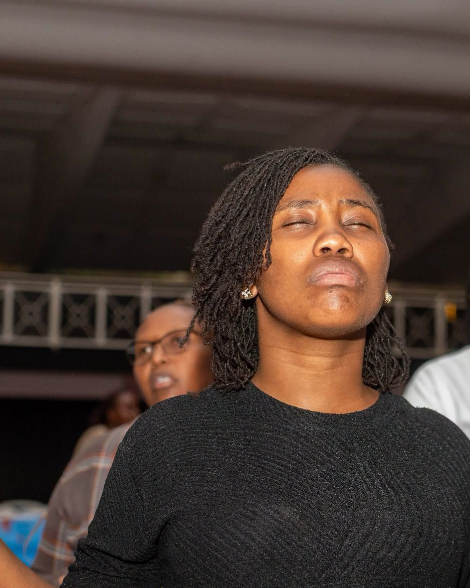
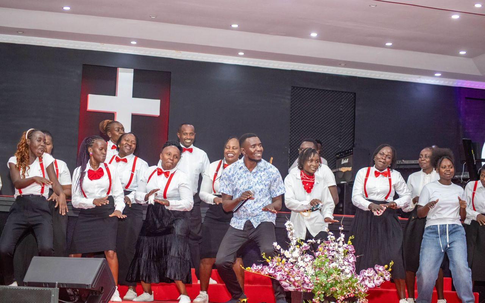

S1
Full-bleed cinematic · crossfade + Ken Burns
Home and gallery. A 1.2s crossfade with a slow 1.08→1.0 push-in, captions on a soft gradient, a progress bar on the active dot, and pause, keyboard, swipe and full-screen controls. Selected


